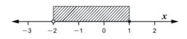

Conceptos
Conceptos Un intervalo puede describirse como un conjunto cuyos elementos satisfacen una desigualdad. Por ejemplo, el conjunto
es el intervalo formado por todos los números reales que son mayores que 1, el cual es el extremo del intervalo, mientras que
indica que los elementos de B están comprendidos entre 0 y 1, incluyendo a estos, que son los extremos del intervalo.
Ejemplo
1. Ubique los intervalos siguientes en la recta numérica.
C = { x € R | - 2 < x ≤ 1} Todos los números mayores que -2 y menores o iguales a 1.
2. De acuerdo con las siguientes gráficas, exprese los intervalos numéricos que se presentan como conjuntos A y B descritos por comprensión.
Ejercicios
1. Ubique los intervalos siguientes en la recta numérica:
- a) A= {x € R| x > 4}
- b) B= {x € R| x ≤ - 3}
- c) C= {x € R|-1 < x ≤ 4}
- d) B= {x € R|-4 ≤ x < 3}
- e) D= {x € R|-2 ≤ x ≤ 3}